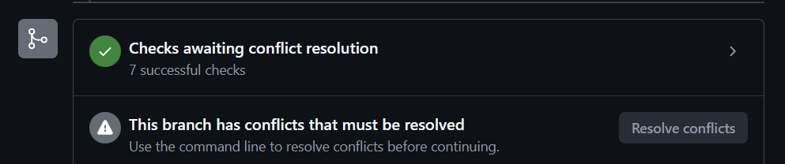
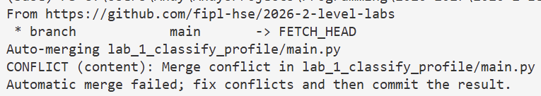
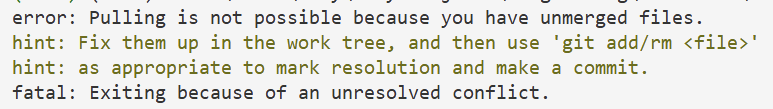
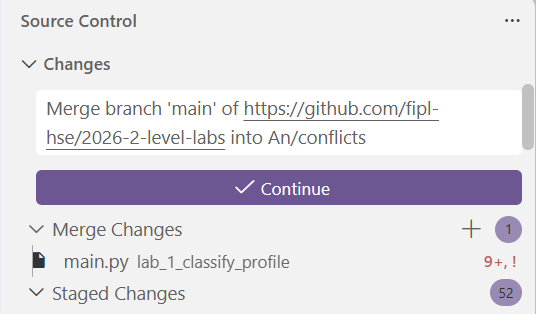
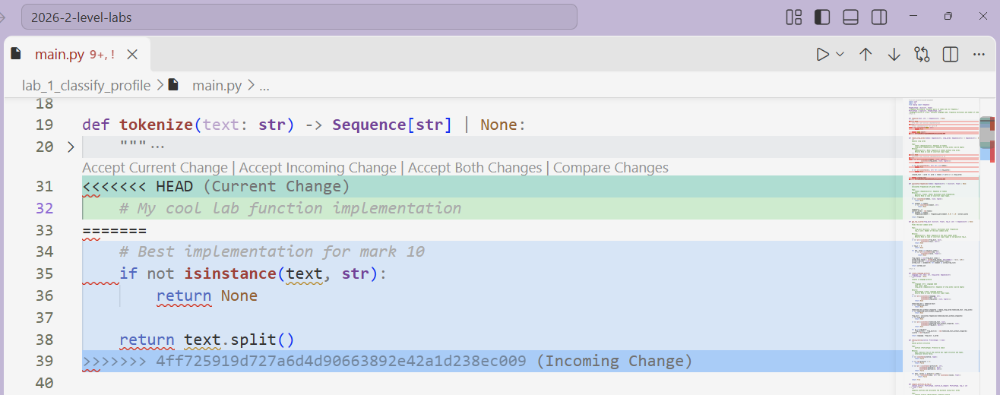
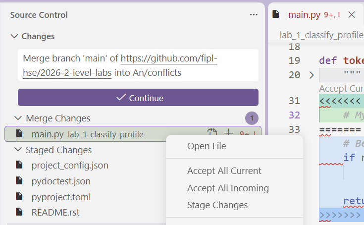
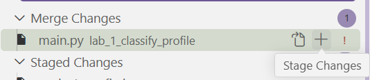
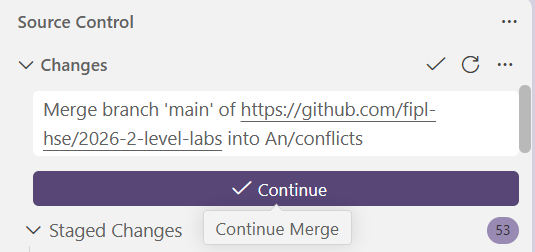

Разрешение конфликтов в VSCode
В процессе написания лабораторной работы, Ваш форк будут обновлять улучшениями основного репозитория.
После анонса об обновлении форков, необходимо выполнить команду git pull --rebase,
прежде чем делать git push Ваших новых изменений.
Также эти обновления проходят после основного дедлайна каждой лабораторной работы. Преподаватели курса выбирают лучшую реализацию лабораторной на оценку 10, и она становится частью основного репозитория.
Если обновление затронуло файлы, которые у Вас уже изменены, у Вас возникнут конфликты.
Конфликты означают, что Вы не сможете сделать git commit/push, пока не разрешите их.
В Пулл Реквесте сообщение о наличии конфликтов выглядит следующим образом:

Сразу под этим блоком будет перечислено, какие файлы были затронуты конфликтами.
В терминале сообщение о конфликте может выглядеть следующим образом:


Сообщение может выглядеть и иначе, в зависимости от тех действий, которые Вы пытаетесь предпринять, однако сообщения всегда содержат ключевую информацию о том, что это именно конфликт. Также сообщение может содержать подсказки о том, как конфликт разрешить, и о том, какие файлы имеют конфликты.
Если сообщение о конфликтах не позволяет выполнять другие команды, закройте терминал и откройте новый — входящие файлы прогрузятся в VSCode, и Вы сможете посмотреть на конфликты.
На вкладке Source Control файлы с конфликтами находятся в блоке
Merge Changes и отмечены восклицательном знаком !.

Когда Вы откроете файл с конфликтами, в нём будут структуры следующего формата:

Та часть, которая находится между <<< и ===, отмеченная как HEAD (Current Change)
— это Ваша имплементация.
То, что находится между === и >>> и отмечено как <Commit SHA> (Incoming Change)
— это изменения, которые были добавлены после обновления форка.
Справа на полосе прокрутки указаны все места, где содержатся конфликты.
Чтобы разрешить конфликт, нужно выбрать одну из опций — Accept Current Change
или Accept Incoming Change
(кнопки находятся сверху блока конфликтов, сразу над <<<).
Выбор зависит от того, в какой ситуации Вы находитесь:
Ситуация 1: Вы сдали лабораторную работу, в которой возникли конфликты.
В таком случае для каждого блока конфликтов выбирайте
Accept Incoming Change.Можете также воспользоваться полным принятием входящих изменений, кликнув правой кнопкой мыши на файл в
Merge Changes, затемAccept All Incoming.
Ситуация 2: Вы НЕ сдали лабораторную работу, в которой возникли конфликты.
В таком случае выбирайте
Accept Current Change— Ваша реализация будет сохранена. Также можно использовать опциюAccept All Current.После того, как Вы сдадите лабораторную работу, Вам понадобится обновить файлы — у Вас должна остаться лучшая реализация из основного репозитория. Для этого можно будет использовать команду
git checkout upstream/main lab_1_classify_profile(с соответствующим именем лабораторной работы). Если при использовании команды терминал выводит ошибку о существованииupstream, обратитесь к инструкции из FAQ.Ситуация 3: Это рядовое обновление, которое затронуло файлы, над которыми Вы работаете.
В таком случае рекомендуется принять все входящие изменения (
Accept Incoming Change).Если же Вам нужно что-то оставить из Вашего кода, выберете
Accept Both Changesи измените полученный код под тот результат, который Вас устроит.
В результате разрешения конфликтов у Вас не должно остаться блоков с <<<, === и >>>.
После разрешения конфликтов в файле выполните следующие шаги:
Сохраните файл с разрешёнными конфликтами (
Ctrl+S).Индексируйте изменения:
Выполните
git addдля нужного файла или во вкладкеSource Controlнажмите на плюс рядом с именем файла.
Разрешите конфликты во всех остальных файлах с конфликтами, для каждого выполните шаги 1-2.
Закоммитьте изменения:
Выполните
git commit -m "<merge-message>"или нажмитеContinueво вкладкеSource Control(важно, чтобы все файлы из блокаMerge Changesпереместились в блокStaged Changes, иначе коммит сделать не получится).
- После того, как конфликты разрешены и изменения закоммичены, Вы можете продолжать работать над
лабораторными —
git pushбудет работать корректно.